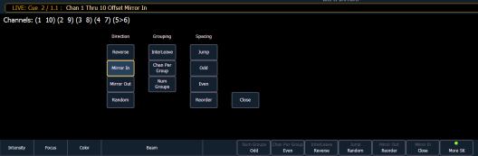

Offset
You can use the {Offset} softkey to aid in channel selection prior to storing groups, submasters, presets, palettes, effects, and using park. When {Offset} is pressed, a channel distribution display will open.

The following options are available as extensions of {Offset}. Options can be used together. These extensions can be used to create Subgroups . To close the Offset display, press {Close}.
Direction
- {Reverse} creates a group with the channels in the reverse order that they were selected in.
- {Mirror In} creates subgroups of channels that mirror inward.
- [1] [Thru] [8] {Mirror In} [Enter] would create 4 subgroups in this order: (1,8) (2,7) (3,6) (4,5)
| Ch 1 | Ch 2 | Ch 3 | Ch 4 | Ch 5 | Ch 6 | Ch 7 | Ch 8 |
| X | | | | | | | X |
| | X | | | | | X | |
| | | X | | | X | | |
| | | | X | X | | | |
- {Mirror Out} creates subgroups of channels that mirror outward.
- [1] [Thru] [8] {Mirror Out} [Enter] would create 4 subgroups in this order: (4,5) (3,6) (2,7) (1,8)
| Ch 1 | Ch 2 | Ch 3 | Ch 4 | Ch 5 | Ch 6 | Ch 7 | Ch 8 |
| | | | X | X | | | |
| | | X | | | X | | |
| | X | | | | | X | |
| X | | | | | | | X |
- {Random} creates a random order to the channels.
Grouping
- {Chan Per Group} creates a specified cluster of channels.
- [1] [Thru] [1][2]{Chan Per Group} [3] [Enter] would create these 4 subgroups of 3 channels each: (1,2,3) (4,5,6) (7,8,9) (10,11,12).
- {InterLeave} creates a number of distributed sets of channels, that are not clustered together.
- [1] [Thru] [1][2]{Chan Per Group} [4] {InterLeave} [Enter] would create these 4 subgroups: (1,4,7,10) (2,5,8,11) (3,6,9,12).
- [1] [Thru] [5] [+] [1][1] [Thru] [1][5] [+] [2][1] [Thru] [2][5] {Chan Per Group} [3] {InterLeave} [Enter] would create these 5 subgroups: (1,11,21) (2,12,22) (3,13,23) (4,14,24) (5,15,25).
- {Num Groups} creates a specified number of subgroups.
- [1] [Thru] [1][2]{Num Groups} [3] [Enter] would create these 3 subgroups: (1,2,3,4) (5,6,7,8) (9,10,11,12).
Spacing
- {Jump} is used to skip over a specified number of channels.
- [1] [Thru] [1][2]{Chan Per Group} [3] {Jump} [1] [Enter] would create these 3 subgroups of 3 channels each: (1,2,3) (5,6,7) (9,10,11). Channels 4, 8, and 12 will be jumped over and will not be in the subgroups.
- {Odd} selects only the odd numbered channels.
- {Even} selects only the even numbered channels.
- {Reorder} is used to reorder the channels of a group into numeric order.